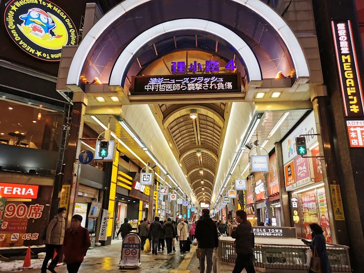
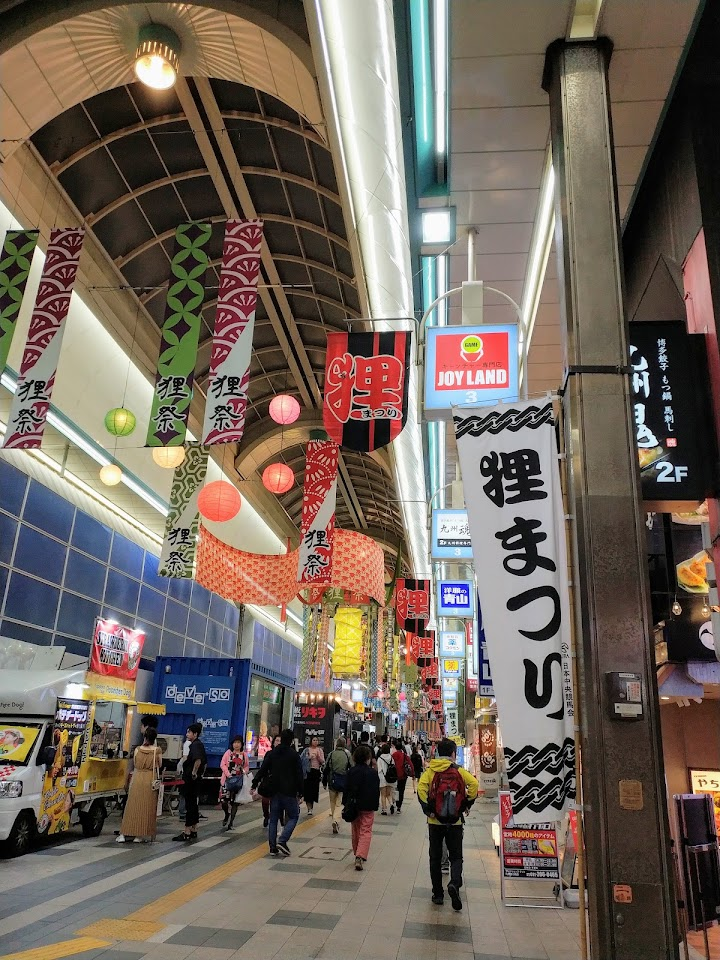
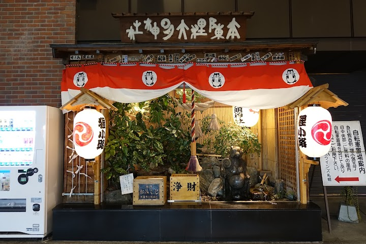
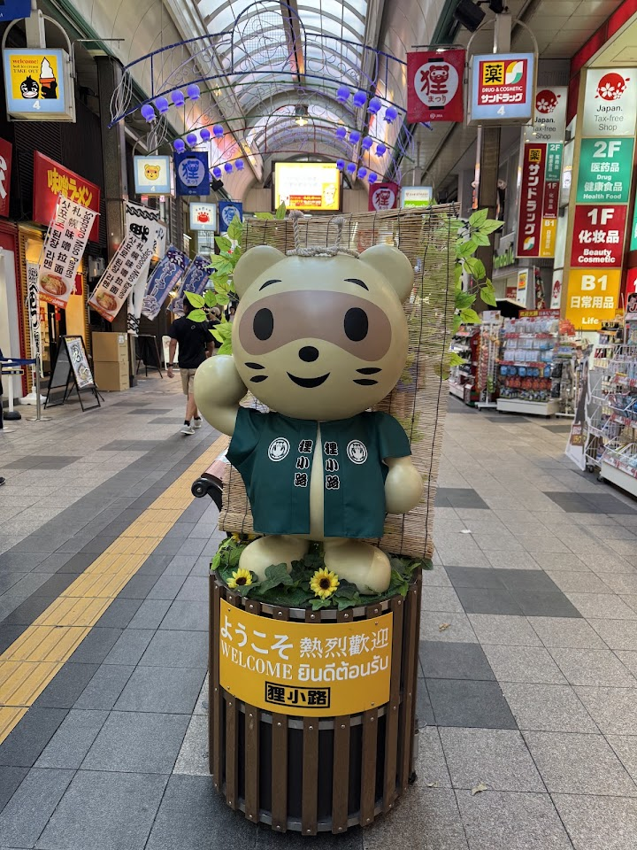
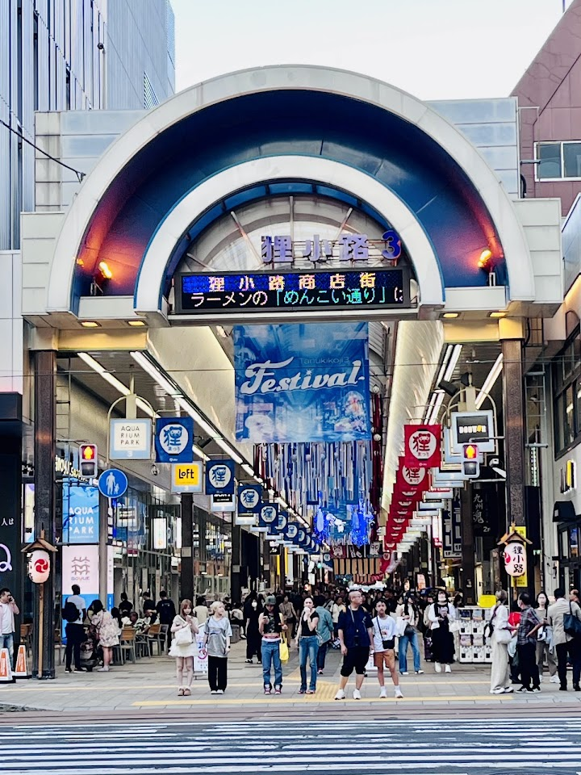

Tanukikoji shopping arcade (suggested)
Tanukikoji is a long-standing covered shopping street stretching seven blocks with around 200 shops and restaurants, a good place to shop in any weather. It was not overly crowded on one recent visit.
Open in Google Maps (street view, more photos and reviews there)






Visitor tips on finding it and getting there
•For a big shopping street, Tanukikoji is not overwhelmingly crowded during my visit (end of May-June). •It’s the perfect day/night walk here in Sapporo if you’re having a day for food tour and shopping. •I love my morning walks here! The street is very quiet with most shops closed. The konbinis are open though. •There are a lot of good ramen, soup curry, and most Japanese restaurants here despite it looking very touristy.